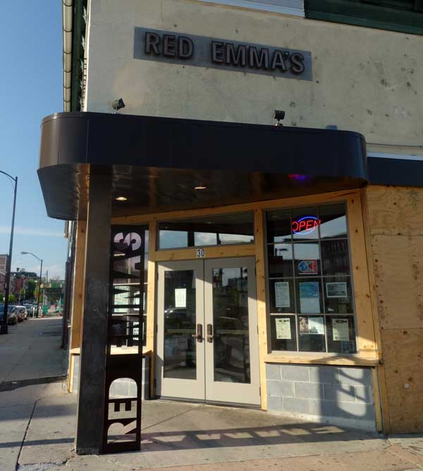
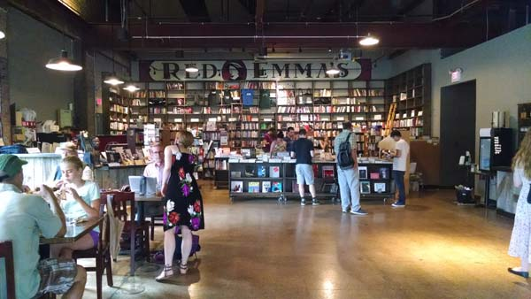

Red Emma’s Bookstore Coffeehouse
  30 W North Ave, Baltimore, MD 21201 (443) 602-7611Red Emma’s is the worker cooperative behind the restaurant, coffee roaster, bookstore, and community events space at 30 W. North Avenue, dedicated to putting principles of solidarity and sustainability into practice in a democratic workplace.
Our project started in 2004, rising from the ashes of Black Planet Books, a volunteer-run anarchist collective bookstore in Fells Point. In building a cafe component in the new space, we wanted to both establish a firmer financial foundation to keep the new project afloat, but also to create a more welcoming environment. There’s no point, after all, in a space dedicated to spreading radical information if the only people who ever come in are already radicalized!
Baltimore in 2004 was a very different place then it is today. When we started, radical, self-managed collective spaces were few and far between. While there were many amazing activists, radical artists, and politically engaged thinkers and writers in the city, there was no place to bring them together to spark encounters and conversations. If Baltimore today has a stronger network of social justice movements, and a rapidly proliferating movement of collectively run spaces and businesses, we’d like to think that our project has had some small part in making that happen.
Our mission is twofold: first, to demonstrate, concretely, that it’s possible to build institutions that directly put values like sustainability and democracy to work, and second, in doing so, to build a resource for movements for social justice here in Baltimore.